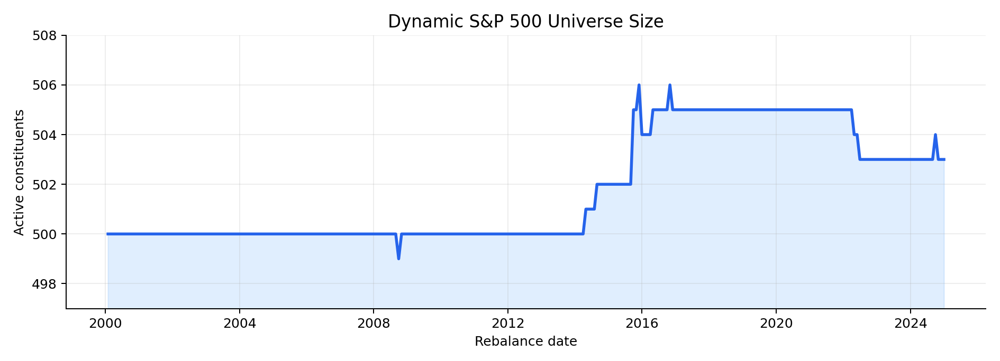
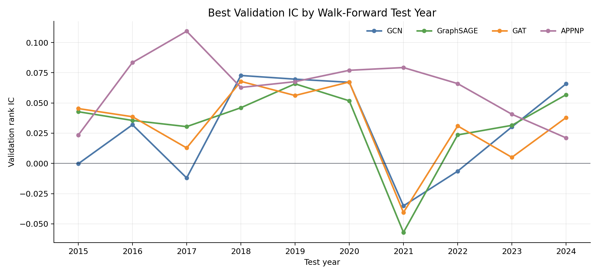
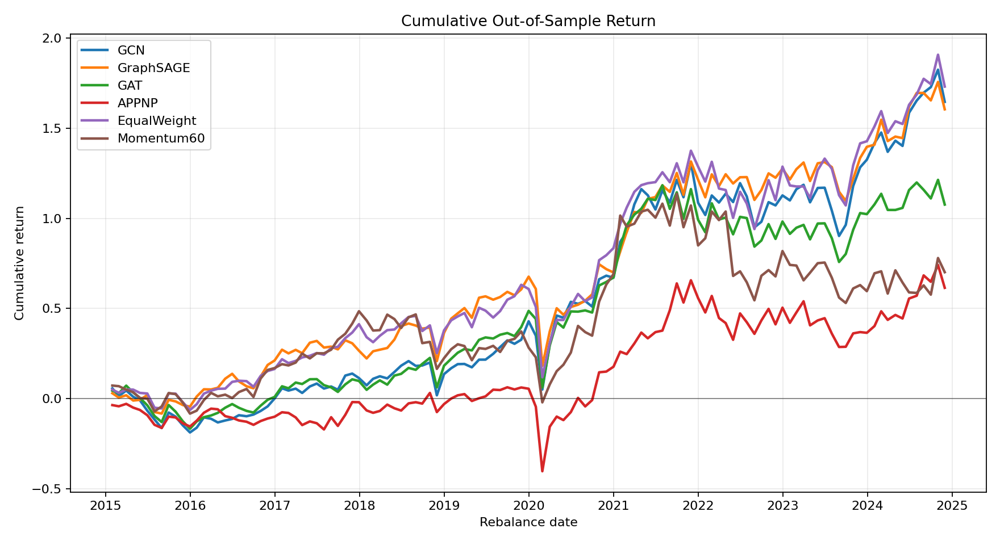
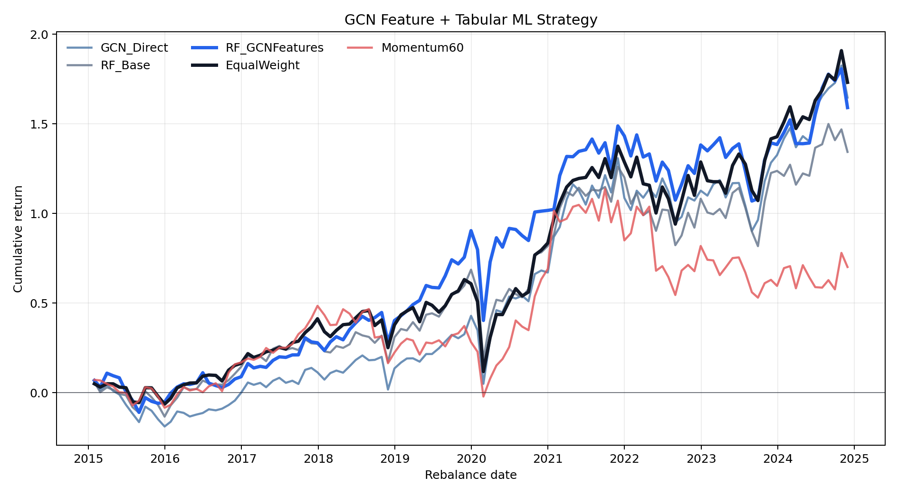
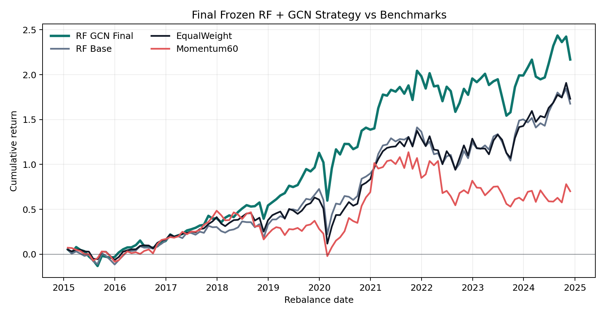
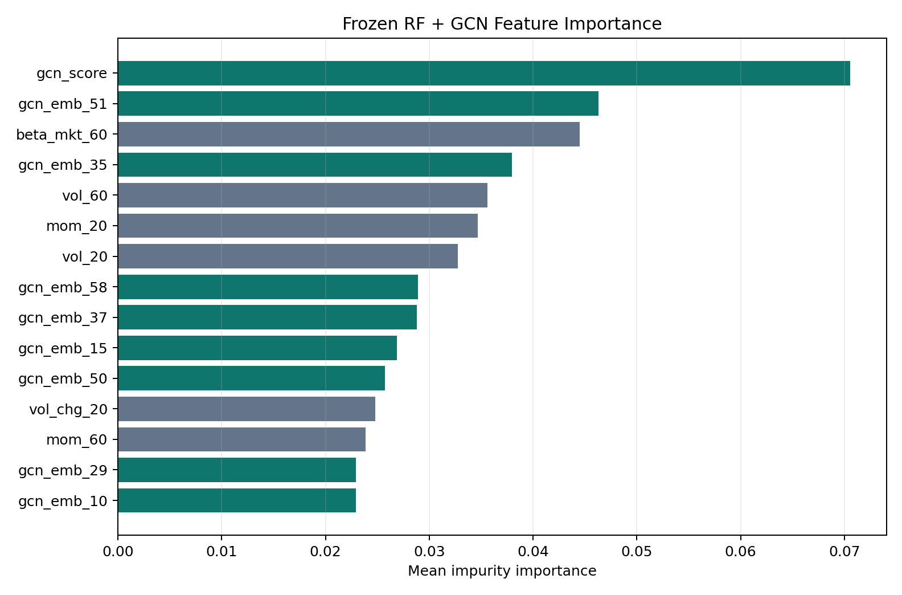

Graph Neural Network Features for Dynamic S&P 500 Portfolio Construction
This page presents a group project from the Machine Learning and Data Analytics course at UCLA Anderson. The central question is whether graph neural networks can improve portfolio construction on a dynamic S&P 500 universe. The data come from WRDS/CRSP daily stock files and historical S&P 500 membership records, covering 1,110 distinct PERMNOs over 4,788,231 daily rows. The investable universe is rebuilt every month from active index constituents (499–506 stocks per month), so the study mitigates the survivor-only bias that would arise from selecting today’s index members and backfilling them through history. The out-of-sample period runs from 2015-01-30 to 2024-11-29, spanning 119 monthly rebalances — enough for a meaningful but still single-path evaluation.
The research design unfolds in three stages. Stage 1 asks whether a GNN score alone can rank stocks well enough to build a competitive portfolio. Stage 2 changes the role of the GNN: rather than a direct portfolio model, the GCN is used as a graph-aware feature extractor whose outputs are fed into a Random Forest rank model. Stage 3 freezes the best configuration found in Stage 2 — before OOS evaluation, with no annual model switching — and reports the final result.
The headline OOS numbers (119 monthly rebalances, 10 bps transaction cost per unit of turnover) are:
| Strategy | Ann. Return | Ann. Vol. | Sharpe | Max DD | Turnover |
|---|---|---|---|---|---|
| RF + GCN Final | 12.33% | 18.24% | 0.676 | -24.99% | 1.60 |
| RF Base | 10.44% | 18.28% | 0.571 | -29.25% | 1.71 |
| EqualWeight | 10.66% | 18.06% | 0.590 | -31.48% | 0.02 |
| Momentum60 | 5.50% | 20.14% | 0.273 | -34.10% | 1.29 |
The main conclusion is not that GNNs universally beat tabular models. It is more specific: direct GNN portfolios are mixed and do not consistently dominate EqualWeight, but GCN representations — a scalar score plus a 64-dimensional embedding per stock — add useful relational information to a conventional RF model, improving Sharpe and maximum drawdown relative to RF Base, EqualWeight, and Momentum60.
Data and dynamic graph construction
At each monthly rebalance date \(t\), the investable set is reconstructed from active S&P 500 constituents. Stocks are identified by CRSP PERMNO rather than ticker, avoiding look-ahead from ticker changes and share-class reuse. The universe size stays close to 500 names throughout the sample, with minor variation from entries, deletions, and share-class mechanics:

Each stock’s node feature vector contains six price-volume signals known at date \(t\):
\[ x_{i,t} = [\text{Mom}_{20},\, \text{Mom}_{60},\, \text{Vol}_{20},\, \text{Vol}_{60},\, \Delta\text{Volume}_{20},\, \beta_{\text{MKT},60}]. \]
Momentum is computed from adjusted prices, volatility is the rolling standard deviation of daily returns, volume change captures short-run trading attention, and beta is estimated against an equal-weight market proxy in a leave-one-out style so that a stock’s own return does not mechanically enter its benchmark. All signals are standardized cross-sectionally at each rebalance date. The prediction target is the next-20-trading-day forward return with a one-day execution lag:
\[ y_{i,t} = \frac{P_{i,t+21}}{P_{i,t+1}} - 1. \]
The one-day lag avoids using the signal-date close as both the information set and the execution price. At each rebalance date, the correlation graph \(G_t = (V_t, E_t, A_t)\) is rebuilt from the most recent 60 daily returns. Each stock keeps its top \(k = 10\) positively correlated neighbors:
\[ A_{ij,t} = \begin{cases} \rho_{ij,t}^{(60)}, & j \in \text{TopK}_{10}^+(i,t), \\ 0, & \text{otherwise.} \end{cases} \]
The graph is therefore sparse, dynamic, and entirely data-driven — it captures changing market relationships (sector rotation, crowding, macro regime) rather than a fixed industry taxonomy.
GNN message-passing models
Four GNN architectures are evaluated as direct portfolio models. Let \(H_t^{(0)} = X_t \in \mathbb{R}^{N_t \times F}\) be the node feature matrix and \(G_t\) the dynamic stock graph. Each model outputs one score per stock used for cross-sectional ranking.
GCN adds self-loops \(\tilde{A} = A + I\) and normalizes by degree \(\tilde{D}_{ii} = \sum_j \tilde{A}_{ij}\):
\[ H^{(\ell+1)} = \phi\!\left(\tilde{D}^{-1/2}\tilde{A}\tilde{D}^{-1/2}H^{(\ell)}W^{(\ell)}\right). \]
GCN performs conservative neighborhood smoothing, which is valuable in a low signal-to-noise environment: noisy individual stock labels are averaged over correlated neighbors that share sector, style, or macro exposures, reducing variance at the cost of some per-stock expressiveness.
GraphSAGE separates a stock’s own representation from an aggregated neighbor mean, making it naturally suited to a dynamic universe where the node set changes every month:
\[ m_i^{(\ell)} = \frac{1}{|\mathcal{N}(i)|}\sum_{j \in \mathcal{N}(i)} h_j^{(\ell)}, \qquad h_i^{(\ell+1)} = \phi(W_s h_i^{(\ell)} + W_n m_i^{(\ell)}). \]
GAT learns neighbor-specific attention weights from feature similarities, allowing the model to up-weight the most informative neighbors. It is more expressive than GCN but carries higher estimation risk from noisy monthly labels.
APPNP decouples feature transformation from graph propagation: it first computes an MLP seed \(Z = f_\theta(X)\), then performs personalized PageRank-style diffusion \(H^{(r+1)} = (1-\alpha)\hat{A}H^{(r)} + \alpha Z\). The teleport term \(\alpha Z\) prevents excessive drift from the per-stock signal.
All four architectures are trained with a pairwise ranking loss \(\mathcal{L} = \frac{1}{|\mathcal{P}|}\sum_{(i,j)\in\mathcal{P}}\log(1 + \exp[-s_{ij}(\hat{y}_{i,t} - \hat{y}_{j,t})])\) where \(s_{ij} = \text{sign}(y_{i,t} - y_{j,t})\). Validation uses cross-sectional rank IC (Spearman correlation between predicted scores and realized forward returns).
Walk-forward backtest protocol
The backtest uses yearly walk-forward retraining. For test year \(Y\), models train on historical snapshots through \(Y-2\), validate on \(Y-1\), and test on \(Y\). This prevents using future validation information to choose a model for an earlier test year. Monthly returns are non-overlapping: the portfolio enters one trading day after the signal date and exits at the next rebalance entry date. All model-based strategies hold long-only top 20 stocks, equal-weight, with 10 bps transaction cost per unit of absolute turnover. EqualWeight holds all 500 active constituents; Momentum60 ranks by 60-day past return and also takes the top 20. The validation IC traces by test year show modest but consistent signals for GCN and GraphSAGE, with a notable dip around 2021 — the post-COVID regime shift — across all architectures:

Stage 1: direct GNN portfolio models
The first experiment asks whether GNNs alone are reliable enough as portfolio managers. The answer is mixed:
| Strategy | Ann. Return | Ann. Vol. | Sharpe | Max DD | Turnover |
|---|---|---|---|---|---|
| GCN | 10.31% | 18.99% | 0.543 | -26.54% | 1.64 |
| GraphSAGE | 10.14% | 17.16% | 0.591 | -29.56% | 1.66 |
| GAT | 7.65% | 18.59% | 0.411 | -28.62% | 1.60 |
| APPNP | 4.95% | 24.19% | 0.204 | -43.88% | 1.61 |
| EqualWeight | 10.66% | 18.06% | 0.590 | -31.48% | 0.02 |
| Momentum60 | 5.50% | 20.14% | 0.273 | -34.10% | 1.29 |
GCN and GraphSAGE produce positive OOS Sharpe ratios and competitive returns, but neither clearly dominates EqualWeight — GraphSAGE matches its Sharpe at 0.591 vs 0.590 while running 1.66 monthly turnover versus EqualWeight’s near-zero 0.02. GAT is weaker, and APPNP collapses to a Sharpe of 0.204 and a -43.88% maximum drawdown. The cumulative return chart makes the instability concrete: APPNP’s 2020 drawdown is severe enough to permanently impair the strategy’s trajectory:

Adding 10 more features (medium- and long-term momentum, downside volatility, idiosyncratic volatility, a 126-day beta, and volume surge) does not fix the problem. GCN deteriorates sharply to 0.193 Sharpe; GraphSAGE also falls; only GAT improves slightly. The “more features solves it” hypothesis does not hold here. The Stage 1 conclusion is that direct GNN scores are architecture-sensitive, subject to high turnover, and not reliable enough as a standalone portfolio engine. This motivates a role change: use GNNs to create relational representations, then let a tabular model perform the final ranking.
Stage 2: GCN as a feature extractor for Random Forest
Stage 2 keeps the GCN but changes what it delivers. After training, the GCN produces two outputs per stock at each rebalance: a scalar ranking score \(\hat{y}_{i,t}^{\text{GCN}}\) and a 64-dimensional hidden embedding \(h_{i,t}^{\text{GCN}}\). These are concatenated with the original six stock features to form an augmented input:
\[ z_{i,t} = \left[x_{i,t} \,\|\, \hat{y}_{i,t}^{\text{GCN}} \,\|\, h_{i,t}^{\text{GCN}}\right], \qquad \hat{s}_{i,t}^{\text{RF}} = f_{\text{RF}}(z_{i,t}). \]
The RF target is the within-month rank transform of realized forward returns, \(q_{i,t} = \text{rank}_{i \in V_t}(y_{i,t})/N_t - 0.5\), which matches the ranking objective without requiring calibrated return forecasts. RF handles nonlinear feature interactions and threshold effects that a GCN’s linear message-passing cannot model; the GCN contributes a denoised, graph-smoothed summary of each stock’s relational context.
| Strategy | Ann. Return | Ann. Vol. | Sharpe | Max DD | Turnover |
|---|---|---|---|---|---|
| RF Base | 8.97% | 18.87% | 0.475 | -29.79% | 1.69 |
| RF + GCN Features | 10.07% | 18.10% | 0.557 | -26.32% | 1.61 |
| GCN Direct | 10.31% | 18.99% | 0.543 | -26.54% | 1.64 |
| EqualWeight | 10.66% | 18.06% | 0.590 | -31.48% | 0.02 |
| Momentum60 | 5.50% | 20.14% | 0.273 | -34.10% | 1.29 |
RF + GCN Features raises Sharpe from 0.475 to 0.557 — a +0.082 lift — and reduces maximum drawdown by 3.47 percentage points relative to RF Base. In the expanded 10-feature setting, the RF standalone reaches only Sharpe 0.370, while RF + GCN Features reaches 0.606, reinforcing the interpretation that the extra tabular features introduce noise when used independently but that GCN graph-smoothing can partially denoise and contextualize them. Nevertheless, the 10-feature final strategy does not beat the 6-feature final strategy, so the project keeps the original six features for robustness and interpretability:

Stage 3: frozen RF + GCN final strategy
The final strategy is deliberately frozen before OOS evaluation. The pipeline is fixed as: six original features → GCN score and 64-dimensional embeddings → five-seed RF ensemble → long-only equal-weight top 20 selection → 10 bps transaction costs. The five-seed ensemble averages RF predictions across five random draws, reducing sensitivity to a single bootstrap sample:
\[ \hat{s}_{i,t}^{\text{ens}} = \frac{1}{M}\sum_{m=1}^{M} \hat{s}_{i,t}^{(m)}, \qquad M = 5. \]
Freezing means no annual hyperparameter selection, no monthly rule switching, and no after-the-fact model choice across the OOS period. Three implementation variants were also tested (EqualTop20, BufferTop20 with a 30-name holding buffer, and VolTop20 with inverse-volatility weights) but none of them improved the return-risk trade-off enough to replace the seed-ensemble design.

The final strategy achieves 12.33% annualized return, 0.676 Sharpe, and -24.99% maximum drawdown — improvements of +1.89 pp return, +0.105 Sharpe, and +4.26 pp on maximum drawdown relative to RF Base. GCN-derived variables are prominent in the RF’s feature importance: gcn_score is the single most important input (mean impurity importance 0.07), followed by gcn_emb_51, beta_mkt_60, gcn_emb_35, and vol_60. Multiple GCN embedding dimensions rank alongside traditional price-volume signals, supporting the interpretation that the graph representation adds information not already contained in momentum, volatility, and beta alone:

Limits
Several important caveats apply. The OOS period covers 119 monthly rebalances, which is useful but still one historical path: the confidence intervals on Sharpe ratio differences at this sample size are wide, and the outperformance relative to EqualWeight at 10 bps transaction costs becomes fragile at 20 bps — RF + GCN Final falls to Sharpe 0.560 while EqualWeight barely moves to 0.589. The active strategy runs average monthly turnover of 1.60 versus EqualWeight’s near-zero turnover, so implementation costs matter more than they appear in a headline Sharpe comparison.
The graph structure itself is limited to rolling pairwise correlations. Sector classifications, fundamentals, macro variables, and options information are all excluded; the correlation edges can change rapidly across regimes, and expressive attention mechanisms like GAT may overfit short-lived co-movement patterns rather than structural dependencies. Market impact, borrow constraints, and shorting costs are not modeled — the strategy is long-only, but its portfolio concentration (top 20 names) and turnover rate would generate non-trivial impact costs in live trading that the 10 bps flat-rate assumption does not capture.
Finally, EqualWeight is a genuinely hard benchmark because it has near-zero turnover and broad market exposure. The RF + GCN strategy improves Sharpe and maximum drawdown relative to it, but the cost-adjusted return advantage over a simple buy-and-hold of the S&P 500 equal-weight index is modest enough that the project is best read as academic evidence for graph-aware representation value rather than a production-ready trading system.